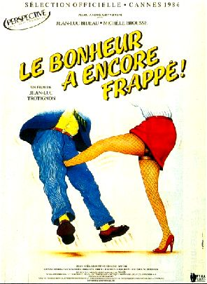
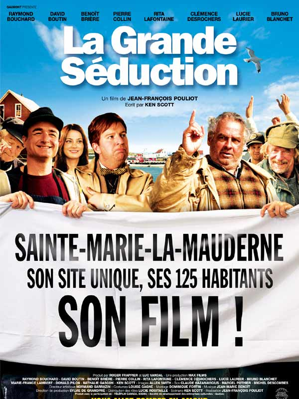
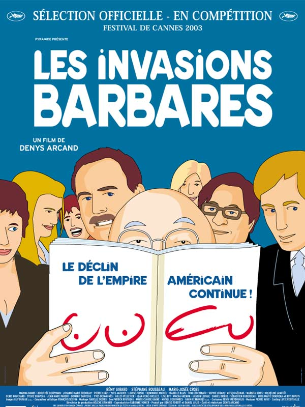

HTML & CSS all-time master
His design talents are often described by his fellow buddies as
"too big for his 150px profile picture"
|  |
Le bonheur a encore frappé !La vie et les embrouilles du sieur Achille Pinglard, banlieusard bete et mechant qui survit sur le dos de sa famille. |
|  |
La grande séductionA Sainte-Marie-La-Mauderne, un petit village portuaire, les habitants, autrefois de fiers pêcheurs, sont maintenant contraints de vivre des allocations gouvernementales. Au fil des chèques de prestations sociales, la fierté des villageois s'effrite et laisse place à la morosité, la torpeur et le désespoir. |
|  |
Les invasions barbaresRémy, divorcé, la cinquantaine, est à l'hôpital. Son ex-femme Louise rappelle d'urgence leur fils Sébastien, installé à Londres. Ce dernier hésite - son père et lui n'ont plus rien à se dire depuis longtemps. Finalement, il accepte de revenir à Montréal pour aider sa mère et soutenir son père. |
Made with in Bordeaux ;-)